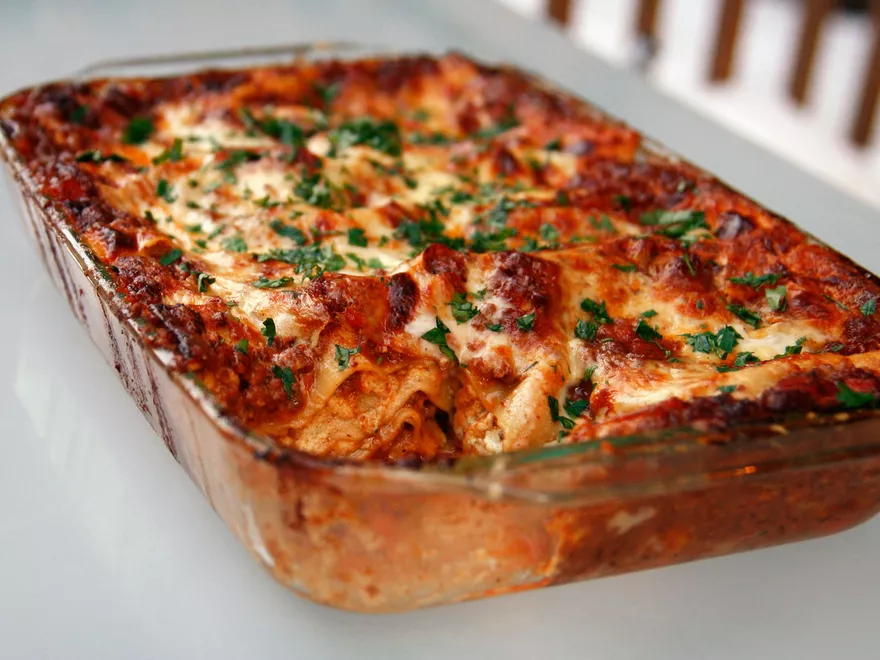

Lasagna
by J. Kenji Lopez Alt
Watch the video here!

Description
Not a quick and dirty lasagna prepared in a North American style.
You could spend three days carefully simmering sauces or hand cranking out fresh pasta by hand.
Ingredients
- For the Ragu Bolognese:
- 2 tbps EVOO
- 4 tbps butter
- 2/3 lb ground lamb
- 2/3 lb ground pork
- 2/3 lb ground veal
- 4 oz chicken livers, finely chopped (optional)
- 1 large onion, finely chopped (about 1 1/2 cups)
- 2 large carrots, peeled and cut into 1/4-inch dice (about 1 cup)
- 3 large ribs celery, peeled, and cut into 1/4-inch dice (about 1 cup
- 4 cloves garlic, finely minced
- 1/2 cup fresh sage, chopped
- Large pinch red pepper flakes (Optional)
- 1 (28-oz) can crushed Italiam plum tomatoes
- 1 1/2 cups dry red wine
- 1 1/2 cups whole milk
- 2 cups chicken or veal stock
- 2 bay leaves
- 1 tbps fish sauce
- 1/2 cup heavy cream
- Salt and pepper
- 1/2 cup minced basil or parsley
- For the Ricotta Mixture:
- 3 cups ricotta
- Salt and pepper
- 2 large eggs
- 1/4 cup minced basil or parsley
- For the besciamella:
- 2 tbps butter
- 2 tbps flour
- 2 cloves garlic, minced
- 2 cups whole milk
- 1/2 lb mozzarella, grated
- 1/4 tsp nutmeg, freshly grated
- Salt and pepper
- To assemble:
- 15 pieces no-boil lasagna noodles
- 4 oz parmesan
- 2 tbps minced basil or parsley
Steps
- For the Ragù Bolognese: Heat butter and olive oil in large Dutch Oven over high heat, stirring occasionally, until butter has stopped foaming. Add lamb, pork, veal, and chicken livers, and cook, breaking up meat with wooden spoon, until no longer pink, 7-10 minutes. Remove from heat, transfer meat to strainer set in large bowl, allow to drain, then transfer drained liquid back to Dutch Oven. Add onions, carrots, celery, garlic, sage, and red pepper flakes, and set over medium heat. Cook, stirring frequently, until vegetables are softened, but not browned, about 10 minutes.
- Return meat to skillet, add tomatoes, wine, milk, stock, and bay leaves, and bring to a simmer over high heat. Reduce heat to low, partially cover, and simmer 2 1/2 to 3 hours, stirring occasionally, until liquid is slightly below level of meat, about 2 quarts of sauce total (you may need to add excess stock while cooking if your burner is cooking it too hot). A layer of fat may form on top during cooking, but do not skim it off. After cooking, remove bay leaves, add fish sauce and heavy cream and simmer until fat is emulsified, about five minutes. Season to taste with salt and black pepper. Remove from heat and allow to cool at room temperature for 30 minutes. Stir in parsley and basil. Bolognese will keep for up to 1 week in fridge, and will improve with time. Reheat until warm before using in lasagna.
- While the ragù is simmering, make the ricotta mixture. Place ricotta in bowl of food processor or stand mixer fitted with whisk attachment and process/mix until smooth. Season to taste with salt and pepper. Add two eggs and minced herbs, and process/mix until incoroporated. Set aside at room temperature until ready to use.
- Make the Besciamella: Heat butter in medium saucepan over medium-high heat until foaming subsides, stirring occasionally, about 1 minute. Add flour and stir with whisk until light blond in color and slightly nutty aroma develops, about 1 minute. Add garlic, and stir to combine. Whisking constantly, add milk in steady stream until fully incorporated. Bring to a simmer (mixture should thicken). Remove heat, add cheese and nutmeg, and whisk until fully melted. Whisking constantly, return to a simmer, remove from heat, and season to taste with salt and pepper. Set aside until ready to use.
- Adjust oven racks to lower middle and lowest positions and preheat oven to 375 degrees. Place lasagna noodles in 13- by 9-inch baking dish and cover with hot tap water (or boiled water) and allow to soak for 10 minutes, changing water once during soaking time. Drain in single layer on clean kitchen towels, or paper towels. Cover with second kitchen towel or paper towels and pat dry.
- To Assemble: Add 1/6th of meat ragù (about 1 1/3 cups) to bottom of baking dish and drizzle with 1/2 cup besciamella. Place three noodles in single layer on top of sauce (noodles will not quite touch each other; this is okay). Top with 1/6 of meat sauce, 1/2 cup besciamella, 1/3 cup Parmigiano, and three more noodles. Spread 1/2 of ricotta mixture on top of noodles with rubber spatula, top with 1/6 of meat sauce, 1/3 cup parmigiano, and three more noodles. Top with 1/6 of meat sauce, 1/2 cup besciamella, 1/3 cup Parmigiano, and three more noodles. Spread remaining 1/2 of ricotta mixture on top of noodles with rubber spatula, top with 1/6 of meat sauce, 1/3 cup parmigiano, and three more noodles. Cover with remaining 1/6 of meat sauce, remaining besciamella (about 1 cup), and remaining 2/3 cup parmigiano. Baking dish should be very full at this point.
- Place foil-lined rimmed baking sheet on lower rack to catch drips, then place lasagna on upper rack and bake until edges are starting to crisp, and top is a bubbly, golden brown, about 45 minutes, rotating half way through baking. Remove from oven and allow to cool at room temperature for 10 minutes. Sprinkle with herbs, and serve.